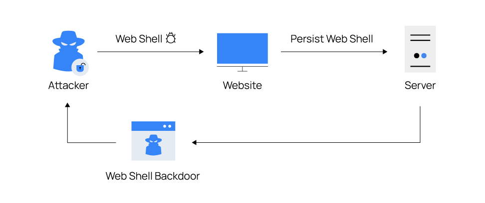

Introduction
A webshell is a web-based interface that provides a command-line shell on a web server. It allows remote administration and control of the server using various commands and functionalities.
Webshells are often used by administrators for legitimate purposes such as managing websites, performing maintenance tasks, and debugging. However, they can also be exploited by attackers to gain unauthorized access to a server, execute malicious commands, and compromise its security.
Features

Webshells typically provide a range of features and capabilities, including:
- Remote file management: Uploading, downloading, and manipulating files on the server.
- Command execution: Running shell commands and scripts on the server.
- Database management: Interacting with databases and executing SQL queries.
- System administration: Managing server configurations, users, and permissions.
- Remote access: Controlling the server remotely through a web-based interface.
Usage
Webshells can be deployed on a web server by uploading a script or exploiting vulnerabilities in web applications. Once installed, they can be accessed through a web browser, providing a convenient interface for managing the server remotely.
It is important to note that while webshells can be useful for legitimate purposes, they also pose significant security risks. To prevent unauthorized access and misuse, it is essential to secure web servers, regularly update software, apply security patches, and monitor for any signs of compromise.